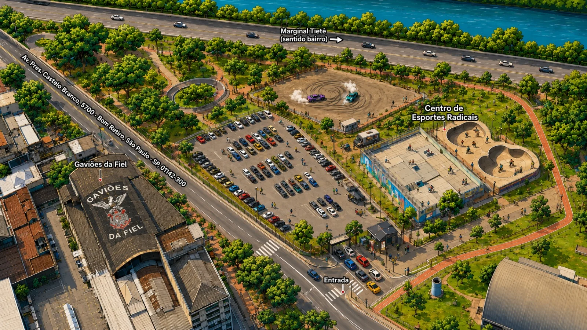

Only Cars
Meeting.
Uma noite de exposição automotiva e drift no coração de São Paulo.
Lote 1 abertoR$ 35por carro Expo
Carregando lote atual...0%
Aperte o play
Sinta o clima
antes de chegar.
Carros, cultura e a energia que vai tomar São Paulo.Contagem regressiva
Falta pouco para
acender as luzes.
Original ou mexido,
todos fazem parte.
O Only Cars Meeting reúne a comunidade automotiva em uma noite dedicada a carros, cultura e experiências. Teremos uma área de exposição para projetos de diferentes estilos, apresentação de drift e um ambiente preparado para aproximar proprietários, entusiastas, marcas e apaixonados pelo universo automotivo.
Não existe seleção prévia de veículos: qualquer projeto poderá participar da exposição mediante a compra do ingresso Expo e disponibilidade de vagas.
Memórias Only
Outros registros no
Only Cars Meeting.
Alguns registros dos encontros que trouxeram a comunidade até aqui. Passe o cursor pelas imagens para explorar.
Toque ou passe o cursor sobre uma foto para destacá-la.
Do site à portaria
Seu ingresso, sempre com você.
- 01Cadastre o veículoInforme motorista, placa, modelo, ano e cor.
- 02Pague com Mercado PagoA confirmação acontece automaticamente.
- 03Receba o QR CodeO ingresso ficará disponível em Minha conta.
- 04Valide na entradaA equipe confere o veículo e ativa sua credencial.
Cronograma do evento
Da abertura ao
último ronco.
23 de outubro20h00 → 23h50Os horários poderão receber pequenos ajustes operacionais.
-
Portões abertosAbertura dos portões + início da exposiçãoChegada dos veículos, acesso do público e início oficial do encontro. 20:00 -
ExpoExposição de veículosProjetos, estilos e a comunidade reunidos na área principal durante a noite. 20:00 -
Preparação de pistaPosicionamento dos carros de driftPreparação operacional para a apresentação com segurança. 20:00 -
Momento principal🔥 Apresentação de DriftA pista ganha vida no ponto alto da noite. 21:50 -
Fim da programaçãoEncerramento do eventoConclusão oficial das atividades do Only Cars Meeting. 22:00
Antes de chegar
Mapa do evento.
Use os pontos de referência abaixo para localizar a entrada e as principais áreas do encontro.

Onde vai acontecer
Centro de Esportes Radicais
Av. Presidente Castelo Branco, 5700
Bom Retiro • São Paulo/SP
Antes de comprar
Perguntas rápidas.
Pedestre precisa comprar ingresso?
Não. A entrada de pedestres será gratuita. O ingresso Expo é cobrado somente para o veículo.
Qualquer carro pode participar?
Sim. Não haverá aprovação prévia do veículo, desde que existam vagas Expo disponíveis.
Posso sair e entrar novamente?
Sim. Depois da primeira validação, sua credencial de reentrada ficará disponível em Minha conta.
Posso transferir meu ingresso?
Não. O ingresso será vinculado ao motorista, placa e modelo informados na compra.
Como solicito cancelamento ou reembolso?
Em Minha conta, abra o ingresso e acesse “Ajuda com este ingresso”. A solicitação será analisada pela equipe antes da devolução do pagamento.
Only Cars Meeting • 23.10.2026